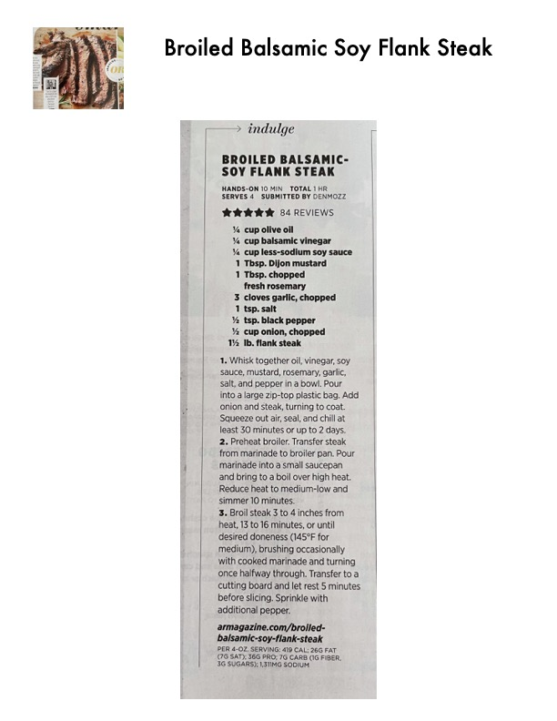

Broiled Balsamic-Soy Flank Steak

Original cookbook page 177
A flavorful marinated flank steak broiled to perfection with a balsamic and soy sauce marinade.
Prep: 10 minutes • Cook: 50 minutes • Total: 1 hour
Ingredients
- ¼ cup olive oil
- ¼ cup balsamic vinegar
- ¼ cup less-sodium soy sauce
- 1 Tbsp. Dijon mustard
- 1 Tbsp. chopped fresh rosemary
- 3 cloves garlic, chopped
- 1 tsp. salt
- ½ tsp. black pepper
- ½ cup onion, chopped
- 1½ lb. flank steak
Instructions
- Whisk together oil, vinegar, soy sauce, mustard, rosemary, garlic, salt, and pepper in a bowl. Pour into a large zip-top plastic bag. Add onion and steak, turning to coat. Squeeze out air, seal, and chill at least 30 minutes or up to 2 days.
- Preheat broiler. Transfer steak from marinade to broiler pan. Pour marinade into a small saucepan and bring to a boil over high heat. Reduce heat to medium-low and simmer 10 minutes.
- Broil steak 3 to 4 inches from heat, 13 to 16 minutes, or until desired doneness (145°F for medium), brushing occasionally with cooked marinade and turning once halfway through. Transfer to a cutting board and let rest 5 minutes before slicing. Sprinkle with additional pepper.
📝 Recipe Notes
Rating: 5 stars from 84 reviews. Submitted by Denmozz. Marinating time is flexible: minimum 30 minutes, up to 2 days for more flavor. The marinade is boiled before basting to make it safe for use on cooked meat. Let the steak rest 5 minutes before slicing for optimal juiciness.
Recipe #177 from collection